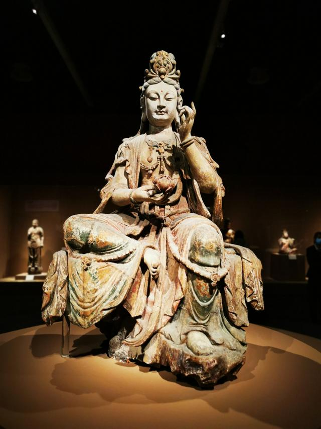

Painted wood carving Guanyin Bodhisattva seated statue
The Bodhisattva wears a high flower crown on his head, has a delicate face, a calm expression, and looks down, as if he is watching the world with infinite compassion. Wearing silk and silk, the silk is flying around his arms. The chest is decorated with Yingluo, and the long skirt is underneath, the long skirt is brightly colored, and the seat is hanging down. The waistband of the skirt is tied, and the belt is decorated with orbs. The Bodhisattva holds a lotus in his right hand, his left leg is drooping, and he steps on the rocks, which is very interesting in life. She is no longer a god high in the altar, but a spiritual messenger who can be approached and communicated. She is the representative of goodness and the incarnation of beauty.
Song Dynasty (960-1279)
Height: 200 cm